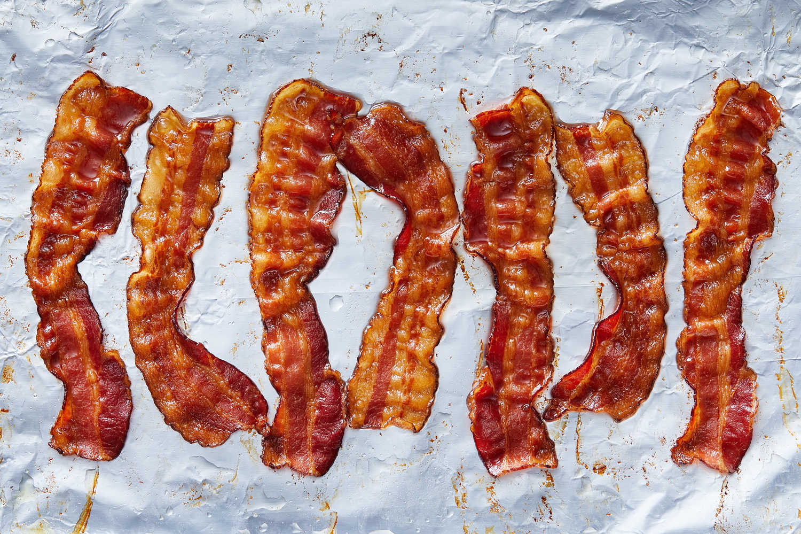

NYTimes Cooking: Oven Bacon

Cooking bacon in the oven gives you perfectly crispy slices without any flipping or fussing, and the cleanup is superspeedy. It’s also the best way to make bacon for a crowd. You can cook the bacon directly on aluminum foil-lined baking sheets or on a wire rack set on top of the baking sheets. The latter method will give you extra crispy bacon, but you'll have to wash that greasy rack. Your choice!
Ingredients
Steps
- Step 1: Heat the oven to 450 degrees. Arrange the bacon in a single layer on 2 aluminum foil-lined rimmed baking sheets, or, for extra-crispy bacon, arrange on 2 wire racks set over 2 foil-lined rimmed baking sheets.
- Step 2: Bake until the bacon is browned and starts to ripple, or to desired doneness, 10 to 20 minutes. (Because the cook time depends on the thickness of the bacon and how you like it cooked, start checking doneness at the 10-minute mark.)
- Step 3: Transfer the bacon to a paper towel-lined plate to drain.